① 会社・基本データ
アエラホームは「外張W断熱のパイオニア」として30年以上の施工実績を持つ、ミドルコスト帯の高性能住宅を得意とする準大手ハウスメーカー。テレビCM未放映・総合住宅展示場の出店抑制など広告費を抑え、その分を建築費に配分する戦略で、一条工務店クラスの断熱性能をより抑えた価格で実現している。
| 項目 | 内容 |
|---|---|
| 会社名 | アエラホーム株式会社（AERA HOME Corporation） |
| 設立 | 1984年12月（前身の中島工務店は1963年創業） |
| 代表者 | 代表取締役社長 中島 秀行 |
| 本社 | 東京都千代田区九段南2-3-1 青葉第一ビル2階 |
| 資本金 | 1億円（2025年5月時点） |
| 売上高 | 86億円（2025年5月期） |
| 従業員数 | 236名（2025年5月時点） |
| 累計引渡し実績 | 16,000棟超（2018年3月時点／以降の公式更新データなし） |
| 拠点数 | 本社＋6地区本部（仙台・福島・群馬・首都圏・中京・福岡）＋FC加盟店 |
| 展示場数 | 全国32拠点前後（2024年8月末時点／直営＋FC） |
| 対応エリア | 東北・関東・甲信越・中部・中国・四国・九州（※近畿・北海道・沖縄は対象外） |
| 事業内容 | 注文住宅の設計・施工・販売、不動産、保険代理業、リフォーム、FC本部運営 |
会社の立ち位置
- ミドルコスト帯の高性能住宅を得意とする準大手クラス
- テレビCM未放映、総合住宅展示場への出店抑制、モデルハウスも長期使用する「広告費削減・建築費配分」戦略
- 直営店＋フランチャイズ（FC）加盟店のハイブリッド運営
- 「外張W断熱のパイオニア」として、高気密・高断熱分野で長年の実績
一言で言うと？
「外張W断熱」を武器に、一条工務店クラスの断熱性能をより抑えた価格で実現する準大手HM。大手のような派手な広告はないが、性能とコストのバランスに価値を感じる施主から支持されている。
② 商品ラインナップと坪単価
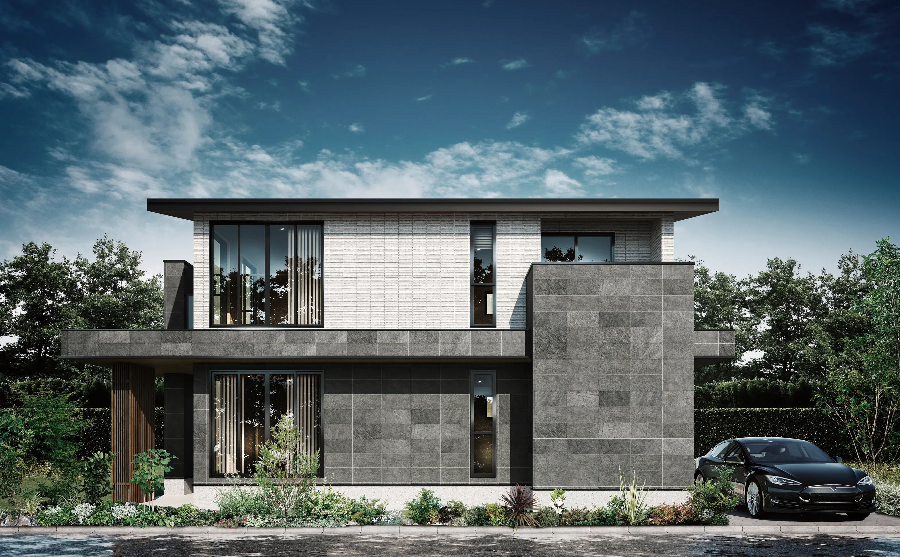
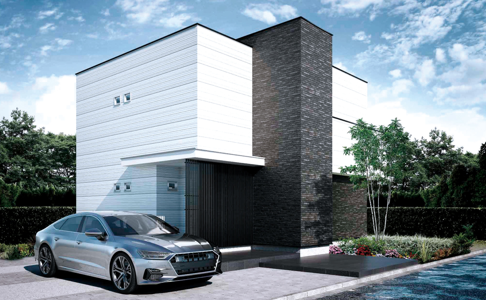
注文住宅（フルオーダー）
| 商品名 | 坪単価目安（2026年） | 主な特徴 |
|---|---|---|
| THE CA.（ザ・シーエー） | 100万円〜 | 2023年12月発売／2025年6月に新プラン4種追加。カリフォルニア工務店とのコラボ規格住宅。高価格帯のセミオーダー |
| クラージュ（CLARGE） | 87万円〜（30坪で約2,610万円〜） | 主力フルオーダー。断熱等級7対応、クリプトンガス入り樹脂サッシ3枚ガラス標準、制震装置標準装備 |
| プレスト（PRESTO） | 85.4万円〜（30坪で約2,562万円〜） | 価格を抑えた主力商品。UA値0.39（6地域）・高気密を確保しつつコスト重視 |
セミオーダー住宅
| 商品名 | 坪単価目安（2026年） | 主な特徴 |
|---|---|---|
| エラベル（ERABERU） | 74万円〜（30坪で約2,220万円〜） | 2024年1月発売。プレスト・クラージュと同等の断熱仕様を維持しつつ、プラン・設備を人気品に限定して打合せ回数を短縮 |
廃番／過去商品（参考）
- プレスティージ（PRESTAGE）／ルーカス（LUCAS）: 過去のクラージュ派生ライン。現在は「クラージュ」に集約
- プレジール: 平屋向けに展開されていた過去ブランド
標準装備の違い（クラージュ vs プレスト）
| 項目 | クラージュ | プレスト |
|---|---|---|
| 外張W断熱 | 標準 | 標準 |
| キューワンボード厚み | 40mm | 40mm |
| 窓 | 樹脂サッシ＋Low-Eトリプルガラス（クリプトンガス） | 樹脂＋アルミ複合サッシ＋Low-Eペア/トリプル |
| 外壁 | タイル外壁（標準） | サイディング |
| 屋根 | 瓦屋根（標準） | スレート屋根 |
| 制震装置（MER SYSTEM） | 標準 | 標準（2024年1月プレスト限定キャンペーン起点で拡大） |
| 断熱等級 | 7対応 | 6対応 |
| C値実測平均 | 0.29 cm²/m² | 0.32〜0.5 cm²/m² |
坪単価の目安（2024〜2026の推移）
| 年 | プレスト | クラージュ | 備考 |
|---|---|---|---|
| 2024年 | 約50〜65万 | 約70〜85万 | エラベル発売、全体として値上がり基調 |
| 2025年 | 約70〜80万 | 約85〜95万 | 資材高騰を受けて再改定 |
| 2026年 | 85.4万〜 | 約87〜100万 | 上位帯が厚くなる（THE CA.は2023年12月発売／2025年6月に新プラン追加） |
参考：坪数別 本体工事費の目安（クラージュ87万円／坪で試算）
| 延べ床面積 | 本体工事費（目安） |
|---|---|
| 25坪 | 約2,175万円 |
| 30坪 | 約2,610万円 |
| 35坪 | 約3,045万円 |
| 40坪 | 約3,480万円 |
| 45坪 | 約3,915万円 |
上記は本体工事費のみ。付帯工事費・諸費用（目安15〜20%）・外構・地盤改良・オプションは別途。
③ 構造・工法
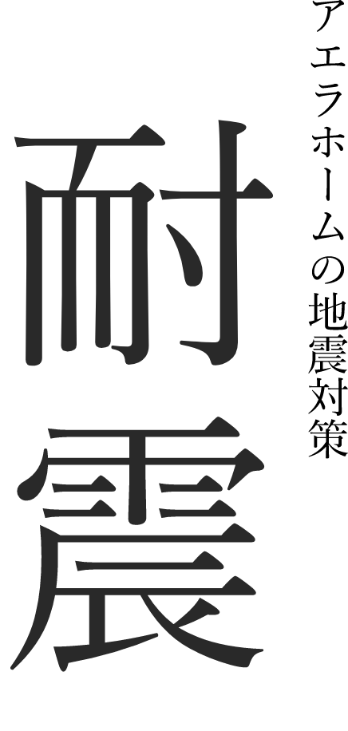
アエラストロング工法（木造軸組パネル工法）
アエラホームの主力構法。伝統的な「在来軸組工法」に耐力面材（パネル）を組み合わせたハイブリッド構造。
| 項目 | 詳細 |
|---|---|
| 基本工法 | 木造軸組工法＋パネル工法（モノコック要素を併用） |
| 耐力面材 | ハイベストウッド（壁倍率4倍）を採用。地震エネルギーを壁全体で分散 |
| 接合金物 | 耐震ジョイント金物を使用。在来工法の約2.5倍の接合強度 |
| 床構造 | 剛床工法（根太レス）で水平剛性を確保 |
| 基礎 | ベタ基礎＋異形鉄筋の密配筋。国の建築基準を上回る強度設計 |
| ファイヤーストップ構造 | 構造材の接合部に防火措置を施し、地震による二次火災リスクを低減 |
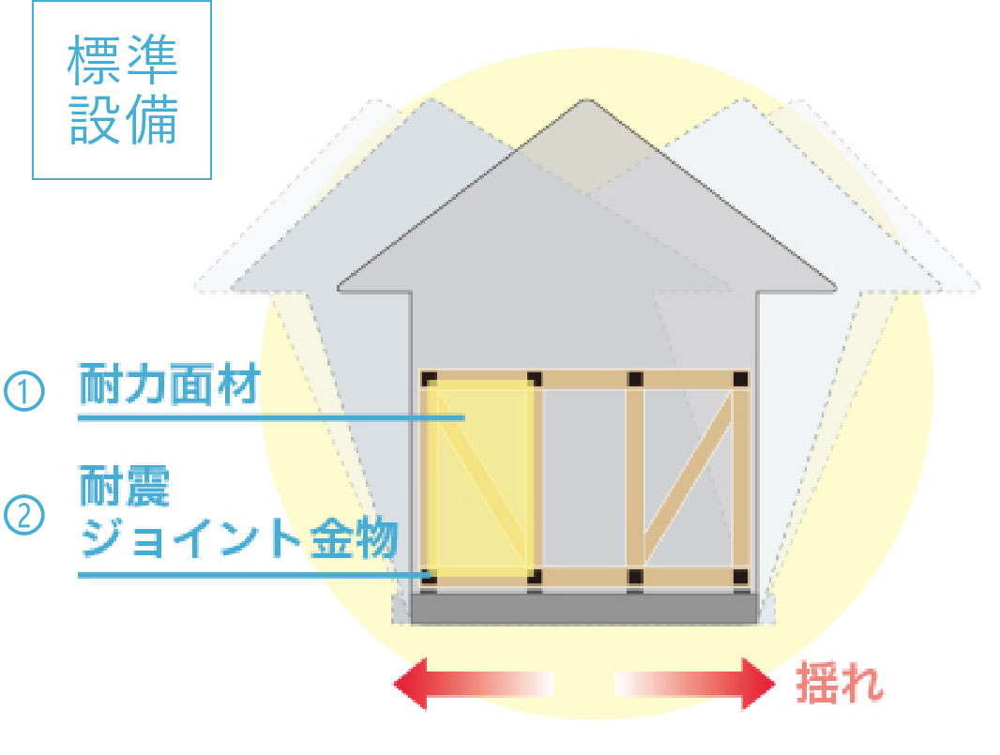
外張W断熱との組み合わせ
- 柱の外側に高性能硬質ウレタンフォーム「キューワンボード」を張り付け
- 柱の内側に吹付け断熱（フォームライトSL等）を施工
- 壁全体が断熱層＋耐力面材で構成される「モノコック風」の一体構造になるため、構造・断熱・気密がワンセットで機能
基礎の特徴
- ベタ基礎が標準（布基礎は採用しない）
- 鉄筋は異形鉄筋、コンクリートは設計基準強度24N/mm²以上（長期優良住宅対応）
- シロアリ対策として薬剤処理＋基礎パッキン工法を併用
④ 耐震性能
耐震等級
| 項目 | 詳細 |
|---|---|
| 耐震等級 | 全棟 耐震等級3（最高等級）に対応 |
| 基準の意味 | 建築基準法の1.5倍の耐震性能。消防署・警察署などと同等 |
| 取得方法 | 標準で耐震等級3相当。ただし「認定取得」は申請費用（10〜30万円）が別途発生することがある（長期優良住宅取得時は含まれる） |
制震システム「MER SYSTEM」
2024年1月プレスト限定キャンペーンを起点に、以降「耐震＋制震」のレジリエンス強化として全棟標準搭載へ拡大。
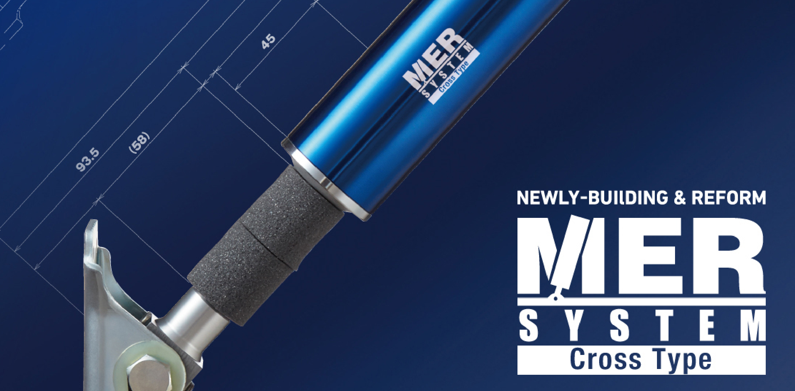
| 項目 | 詳細 |
|---|---|
| 構造 | シングルチューブ構造のオイルダンパー |
| 効果 | 揺れ始めから作動し、建物に伝わる地震エネルギー（加速度）を約40〜48%吸収 |
| 採用時期 | 2024年1月にプレスト限定の標準装備キャンペーン（期間限定）を起点に、以降全棟標準搭載へ拡大 |
| 耐久性 | メンテナンスフリー（交換不要） |
| 設置場所 | 1階壁内に複数箇所設置 |
耐震性能の補足
- ハイベストウッドの壁倍率4倍は、一般的な構造用合板（壁倍率2.5倍）の約1.6倍
- 耐震ジョイント金物＋剛床工法＋ベタ基礎の組合せで「点」ではなく「面」で地震エネルギーを受け止める設計
- ただし、実大振動実験の公表データは一条工務店ほど多くない。公称スペックに対するオーナーの実体験が主な根拠
他社との耐震アプローチ比較
| メーカー | 耐震等級 | 制震 | 実大振動実験 |
|---|---|---|---|
| アエラホーム | 3（標準） | MER SYSTEM（標準） | あり（ただし公表データ少） |
| 一条工務店 | 3（標準） | なし（耐震特化） | 253回の実大加振実験 |
| 住友林業 | 3（標準） | あり（ビッグフレーム） | 公表あり |
| 積水ハウス | 3（標準） | シーカス（標準/オプション） | 公表あり |
| タマホーム | 3（推奨） | オプション | 公表少 |
⑤ 断熱性能（最重要セクション）
アエラホームの最大の差別化ポイント。外張W断熱のパイオニアとして30年以上の施工実績を持つ。
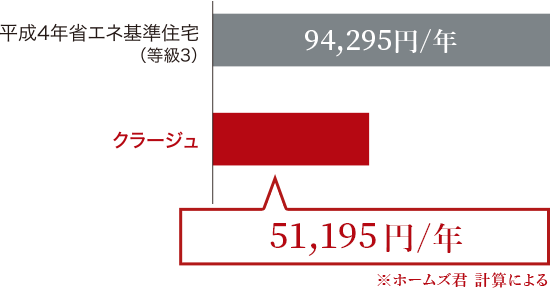
外張W断熱工法の仕組み
| 層 | 使用材料 | 厚み | 役割 |
|---|---|---|---|
| 外側（外張断熱） | キューワンボード（アルミ箔面材付高性能硬質ウレタンフォーム） | 40mm | 建物全体を断熱材で覆い、熱橋（ヒートブリッジ）を遮断 |
| 内側（吹付け断熱） | 吹付け硬質ウレタンフォーム（フォームライトSL等。約100倍に発泡） | 柱厚分（通常105mm） | 微細な隙間まで充填し、気密と内部結露を防止 |
キューワンボードの特徴
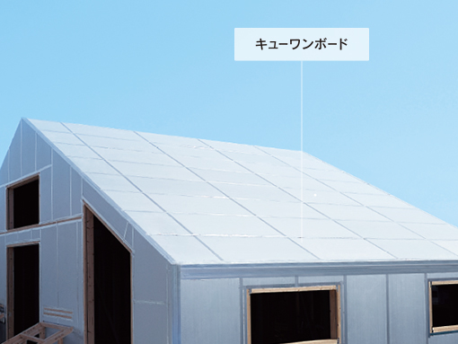
- アルミ箔面材で輻射熱を反射 → 夏期の壁熱貫流量を約48%削減（従来のポリクラフト紙付に対して）
- ノンフロン発泡＋ホルムアルデヒド放散なし（F☆☆☆☆相当）→ エコ建材
- ボード自体に高い剛性があり、外壁下地材としても機能
UA値・C値（商品別）
| 商品 | UA値（6地域想定） | C値（実測平均） | 断熱等級 |
|---|---|---|---|
| THE CA. / クラージュ | 0.26 W/m²K | 0.29 cm²/m² | 等級7 |
| プレスト | 0.39 W/m²K | 0.32〜0.5 cm²/m² | 等級6 |
| エラベル | 0.39〜 | 0.32〜0.5 | 等級6 |
| （参考）HEAT20 G2基準 | 0.46 | ― | 等級6相当 |
| （参考）HEAT20 G3基準 | 0.26 | ― | 等級7相当 |
| （参考）国の省エネ基準 | 0.87 | ― | 等級4 |
公式発表：3〜7地域の外張W断熱住宅の平均C値 = 0.32（2024年10月〜2025年9月実績）
窓の仕様
| 商品 | ガラス構成 | サッシ |
|---|---|---|
| THE CA. / クラージュ | Low-Eトリプルガラス＋クリプトンガス封入 | オール樹脂サッシ |
| プレスト | Low-Eペアガラス〜トリプルガラス（地域による） | 樹脂＋アルミ複合サッシ |
| エラベル | Low-Eペアまたはトリプル（選択） | 樹脂 or 複合 |
他社との断熱性能比較（2026年代表値）
| ハウスメーカー | 代表UA値 | 代表C値 | 断熱等級 | 備考 |
|---|---|---|---|---|
| 一条工務店（i-smart） | 0.25 | 0.59（全棟平均） | 7 | 全館床暖房標準 |
| アエラホーム（クラージュ） | 0.26 | 0.29 | 7 | 外張W断熱＋制震標準 |
| タマホーム（笑顔の家） | 0.23 | ― | 7 | オプション多め |
| クレバリーホーム | 0.45〜 | ― | 6 | タイル外壁標準 |
| ヒノキヤ | 0.45〜0.50 | ― | 5〜6 | Z空調標準 |
| 住友林業 | 0.46 | 非公表 | 5〜6 | 木質感重視 |
| 積水ハウス（木造） | 0.46〜0.60 | 非公表 | 5 | 鉄骨もあり |
ポイント：UA値・C値ともに一条工務店と同等以上のレベル。特にC値の実測平均0.29は、国内HMではトップクラスの数値。「知名度は低いが性能は本物」というアエラの本質がここに凝縮されている。
⑥ 気密性能
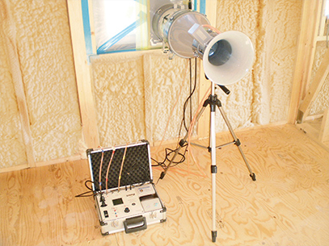
全棟気密測定の実施
| 項目 | 詳細 |
|---|---|
| 測定実施率 | 全棟（第三者機関による気密検査） |
| 公表平均C値 | 0.32 cm²/m²（3〜7地域・2024年10月〜2025年9月実績） |
| クラージュ平均 | 0.29 cm²/m² |
| 測定タイミング | 施工中の中間測定＋完成時測定 |
| 結果開示 | オーナーに報告書として開示 |
C値の意味と実務感覚
- C値1.0 = 延床面積100m²に対し合計100cm²（10cm×10cm）のすき間
- C値0.5以下で「高気密住宅」、0.3以下で「超高気密」と評価される水準
- アエラホームの0.29〜0.32は超高気密の部類。大手HMで公表していないメーカーが多い中、数値で明示している点はアドバンテージ
気密を支える施工ポイント
- 吹付けウレタンが隙間を自動充填（施工品質のバラツキを抑制）
- 気密テープで配管貫通部・コンセントボックスを徹底シーリング
- 外張断熱層と吹付け層で二重のバリア
- 社内基準C値0.5以下を設定（未達の場合は是正工事）
他社との気密実績比較
| HM | C値実測公表 | 全棟測定 |
|---|---|---|
| アエラホーム | 0.32（3〜7地域平均） | 全棟実施 |
| 一条工務店 | 0.59（全棟平均） | 全棟実施 |
| スウェーデンハウス | 0.6前後 | 実施 |
| 住友林業 | 非公表 | 希望者のみ |
| 積水ハウス | 非公表 | 実施せず |
| 大手HM全般 | 非公表 | 実施少 |
⑦ 換気・空調
全館空調換気システム「エアリア（AirRea）」
アエラホーム独自の全館空調。外張W断熱と組み合わせることで高効率を実現している。
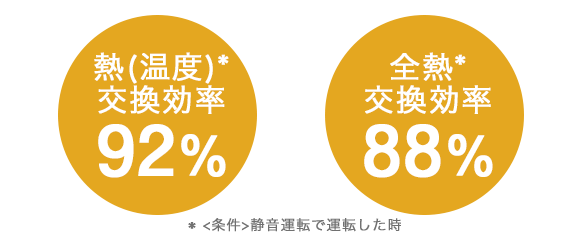
| 項目 | 仕様 |
|---|---|
| 方式 | 1台のエアコンで家全体を冷暖房する全館空調＋第一種熱交換換気 |
| 換気方式 | 第一種換気（機械給排気）＋全熱交換 |
| フィルター | 高機能ダブルエアフィルター（PM2.5対応、インフルエンザウイルス不活化、花粉・ダニ抑制） |
| 導入費用 | 約100万円〜（30坪目安） ※他社の全館空調は200〜250万円が相場 |
| ランニングコスト | 外張W断熱との組合せで月1万円台に抑制した実例あり |
| 温度ムラ | 廊下・トイレ・脱衣室まで一定温度を保つ設計 |
| メンテナンス | フィルター清掃（月1目安）＋定期フィルター交換（1〜2年） |
換気システム単体の選択肢
- 第一種全熱交換換気（標準）：エアリア非搭載時でも熱交換型の第一種換気
- 第三種換気：プレストでは第三種換気がベースの場合あり（地域・仕様で異なる）
ZEH対応
| 項目 | 対応状況 |
|---|---|
| ZEHビルダー登録 | 登録済み |
| ZEH普及率目標 | 公式サイトで毎年公開 |
| 標準仕様 | 外張W断熱＋樹脂サッシで断熱基準は標準でZEHをクリア |
| 太陽光発電 | オプション。約22万円/kWが目安 |
| HEMS | オプション |
| 蓄電池 | オプション |
エアリアのメリット・デメリット
メリット
- 同等性能の全館空調の半額程度で導入可能
- 外張W断熱との相性が抜群（熱損失が少ないため小容量のエアコンで全館カバー）
- フィルターを自分で清掃可能（専門業者不要）
デメリット
- 1台故障すると家全体の空調が止まる（予備エアコンの設置を検討する人も）
- フィルター交換を怠ると性能が急落
- 湿度管理は別途（うるケア相当の加湿機能なし）
⑧ ZEH対応と省エネ性能
ZEHの基本スペック
- 外皮性能：クラージュはHEAT20 G3（等級7）、プレストはG2（等級6）を標準で達成
- 一次エネルギー消費量：国の省エネ基準から20%以上削減（ZEH基準クリア）
- 創エネ：太陽光発電（オプション）で100%削減へ
ZEHビルダー評価
- 2015年の制度開始時からZEHビルダー（プランナー）として登録
- 毎年のZEH実績を公表
光熱費シミュレーション（参考）
| 条件 | 年間光熱費目安 |
|---|---|
| クラージュ30坪（4人家族）・太陽光なし | 約15〜20万円 |
| クラージュ30坪＋太陽光5kW | 約5〜10万円（売電相殺で実質3万円未満も） |
| クラージュ30坪＋太陽光10kW＋蓄電池 | 実質ほぼゼロ〜プラス（売電込） |
補助金・減税との相性
| 制度 | 対象 |
|---|---|
| 子育てグリーン住宅支援事業（2026年継続見込み） | ZEH水準で最大100万円 |
| 住宅ローン減税 | ZEH水準認定で控除額アップ |
| フラット35S | 金利引下げ対象 |
| 長期優良住宅認定 | 固定資産税の減額期間延長 |
⑨ デザイン
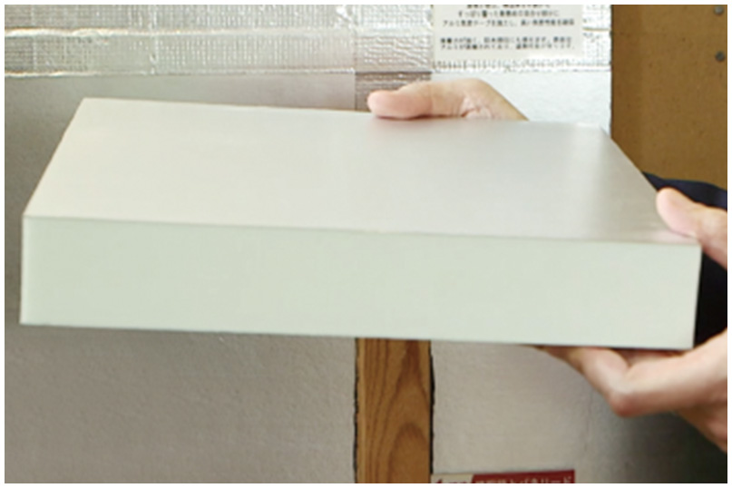
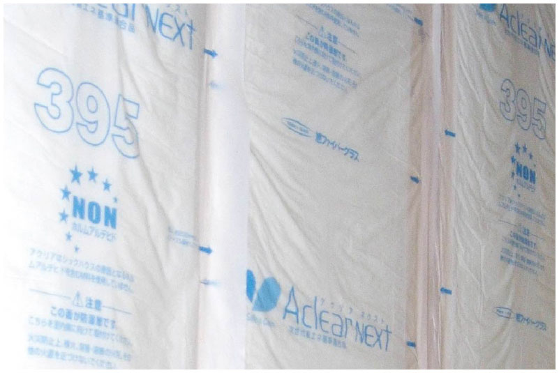
外観デザインの傾向
| 商品 | 外観の特徴 |
|---|---|
| THE CA. | 2023年12月発売／2025年6月に新プラン4種追加のカリフォルニア工務店コラボ規格住宅。モダン・ラグジュアリー系。タイル外壁＋大開口の組合せを許容 |
| クラージュ | タイル外壁＋瓦屋根標準。総二階が多く、シンプル・シャープな印象 |
| プレスト | サイディング外壁＋スレート屋根。ナチュラル〜シンプルモダンが中心 |
| エラベル | 規定プランからの選択制。デザインの幅は限定的だがバランスは良い |
内装の特徴
- 標準の床材はシートフローリング（EBコート）中心。無垢床はオプション
- キッチンはリクシル・クリナップなど国内大手設備メーカーの既製品を採用（自社オリジナル品は少ない）→ 将来の交換互換性は高い
- 天井高は標準2.4m前後。THE CA.／クラージュでは勾配天井オプションあり
デザイン自由度
- フルオーダー（クラージュ・プレスト・THE CA.）：比較的自由。大開口や吹抜けも可能
- セミオーダー（エラベル）：規定プランから選択。自由度は低めだがコストと工期を圧縮
- 一条工務店ほどの「一条ルール」的制約は少ないが、大開口を多用すると断熱性が落ちるため設計士と要相談
設計自由度の率直な評価
- デザインの「尖り」では住友林業・三井ホームに劣る
- 一方で「標準仕様を崩さなければ性能が担保される」安定感がある
- デザインにこだわるなら THE CA. か クラージュ＋外構・内装オプションの積み上げが前提
⑩ 保証・メンテナンス
保証体系
| 内容 | 期間 | 条件 |
|---|---|---|
| 構造躯体・防水の初期保証 | 20年（法定10年＋アエラ独自10年） | 10年目に第三者機関（Japan Living Guarantee）による無料点検のみでOK（有料メンテ工事不要） |
| 住宅設備（キッチン・バス・洗面・給湯・便器・換気・インターホン等） | 10年 | 期間中は部品代・出張費・作業費すべて無料、回数無制限 |
| 延長保証（20年以降） | 20年目以降、5年ごとに有料メンテを実施することで5年延長。理論上は永年保証 | 5年ごとに有料メンテナンス工事が必須 |
| 24時間緊急対応 | 水漏れ・鍵開錠・窓ガラスなど | 30分程度の軽微な対応は初回無料 |
定期点検スケジュール
引渡し後：2ヶ月 → 1年 → 2年 → 5年 → 10年 → 13年 → 16年 → 20年
おうちポイント制度（独自の修繕積立）
| 項目 | 詳細 |
|---|---|
| 制度名 | おうちポイント |
| 仕組み | 月々3,000円〜（最大10口まで）を自動積立。年率+1.6%のボーナスが付く |
| 利用可能範囲 | リフォーム・修繕・クリーニング・メンテナンス工事費用 |
| 有効期限 | 15年 |
| メリット | 銀行預金より高利回りで将来の修繕費を計画的に準備できる |
他社との保証比較
| HM | 初期保証（構造） | 設備保証 | 最長延長 | 特徴 |
|---|---|---|---|---|
| アエラホーム | 20年 | 10年（部品・工賃無料） | 永年（有料メンテで延長） | 10年目は無料点検のみ |
| 一条工務店 | 30年 | 10年 | 30年 | シロアリ予防無償 |
| 住友林業 | 30年 | 2年 | 60年 | 長期優良住宅前提 |
| 積水ハウス | 30年 | 10年 | 永年 | ユートラスシステム |
| ヘーベルハウス | 30年 | 10年 | 60年 | ロングライフ |
| タマホーム | 10年 | 2年 | 60年 | 延長は有料 |
保証のリアルな評価
良い点
- 10年目の有料メンテ工事が不要で20年保証継続（多くのHMは10年目に数十万の有料工事が必須）
- 設備10年無料対応は業界でも手厚い部類
- おうちポイントで修繕積立が制度化されている
注意点
- 初期保証20年は大手（積水・住友林業・ヘーベルの30年）より短い
- 永年保証は「理論上」であり、20年目以降は5年ごとに有料メンテナンス工事が条件
- FC加盟店経由の場合、実際の対応はFC店が行うためエリアによって対応品質にバラツキ
⑪ 建築期間
各フェーズの期間目安
| フェーズ | 期間目安 |
|---|---|
| 展示場見学〜プラン提案 | 1〜2ヶ月 |
| プラン打合せ〜仮契約 | 1〜2ヶ月 |
| 仮契約〜本契約（詳細設計） | 2〜4ヶ月 |
| 本契約〜着工（確認申請・地盤改良） | 1〜3ヶ月 |
| 着工〜上棟 | 1〜2ヶ月 |
| 上棟〜引渡し | 3〜5ヶ月 |
| 合計（初回来場〜引渡し） | 約9〜15ヶ月 |
| 着工〜引渡し | 約4〜6ヶ月 |
建築期間の特徴
- エラベル（規格型）は打合せ回数を短縮できるため、初回来場〜引渡しで7〜10ヶ月に圧縮可能
- クラージュ・THE CA.はフルオーダーで仕様決めに時間がかかり、12〜15ヶ月が標準
- FC加盟店経由の場合、地域の工務店が実施工を担当するため、着工待ちの期間は加盟店の繁忙度に左右される
建築期間を短くするコツ
- エラベルの検討：規格から選ぶ形式で大幅時短
- 早期の金融機関内定：本契約前に住宅ローンの事前審査を完了しておく
- オプションの決定を前倒し：仕様確定が遅れると確認申請が伸びる
- 土地と同時並行：土地探しと建築会社選定を同時進行すると時間短縮
⑫ 客層
典型的な施主プロファイル
| 属性 | 傾向 |
|---|---|
| 年齢 | 30〜40代が中心（特に30代前半〜40代前半） |
| 世帯構成 | 共働きファミリー、子育て世代 |
| 世帯年収 | 500〜800万円がボリュームゾーン（一条より若干低め） |
| 最低年収目安 | 世帯年収400万円〜（プレストなら実現しやすい） |
| 価値観 | 「性能を重視したいが、一条工務店は予算的に厳しい」「ランニングコストを抑えて長期的に得したい」 |
| 情報収集 | YouTube・ブログ・Instagram。断熱・気密の数値比較が得意な層 |
| 職業傾向 | 理工系・IT系・公務員など、数字で判断するタイプが多め |
アエラホームを選ぶ理由TOP3
- 一条工務店クラスの断熱・気密性能を、より抑えた価格で実現できる
- 全館空調「エアリア」が他社の半額で導入できる
- 数値で性能を語ってくれる（UA値・C値・気密測定結果を出してくれる）
施主の特徴
- 大手HMの「ブランド料」を払いたくない合理派
- 展示場訪問前にSNSで徹底比較してから来場するタイプ
- 家電でいうと「アイリスオーヤマ」「シャオミ」的な合理性を好む傾向
⑬ 営業攻略
商談フローの特徴
| フェーズ | ポイント |
|---|---|
| 初回来場 | 展示場は少なめ。遠方の人はバーチャル展示場も活用可能 |
| ヒアリング | 予算・家族構成・希望性能を詳細に聞かれる |
| 概算提案 | 比較的早く出る。ただし「ファーストプライス」は最低限の仕様の可能性があり要注意 |
| 仮契約 | 10〜30万円の申込金が一般的（返金可否は要書面確認） |
| 詳細打合せ | 2〜3ヶ月かけて仕様固め |
| 本契約 | 建物代の10%程度を契約金として支払い |
値引き・キャンペーン
| 項目 | 情報 |
|---|---|
| 定価販売か値引きか | 値引きはある（大手HMよりは柔軟） |
| 値引き実績例 | 350万円引き（坪8万円低減相当）の報告あり |
| キャンペーン頻度 | 月2回程度 |
| 代表的なキャンペーン | 「総額1億円還元キャンペーン」（先着100組・最大100万円還元）等 |
| キャンペーン適用条件 | 2階建て35坪以上／平屋25坪以上が多い。着工時期条件あり |
営業攻略のチェックポイント
- ファーストプライスに値増しが含まれていないか確認
最初の見積もりが高めに出て、値引きで「お得感」を演出するパターンに注意。本体価格・付帯・オプションの内訳を必ず求める。 - FC加盟店か直営店かを確認
同じ「アエラホーム」でも、契約主体が異なると施工品質・対応速度が変わる。直営店は会社直轄で品質が安定しやすい。FC加盟店は地元工務店の実力に依存。 - 標準仕様とオプションの線引き
クラージュの標準＝タイル外壁・瓦屋根・制震装置・Low-Eトリプルサッシ。プレストは標準仕様が簡素。オプション積み上げで価格がクラージュに迫ることも。 - 相見積もりを取る
一条工務店・ヒノキヤ・クレバリー・アイ工務店など同価格帯との比較が有効。アエラは比較して有利なポイントがある商品なので、隠さず他社見積もりを見せてOK。 - 担当者との相性を初回MTGで見極める
レスポンス速度・提案の質・知識量をチェック。違和感があれば担当変更を遠慮なく依頼。
避けたい営業トーク
- 「今月中に契約すれば特別値引き」→ 急がせる営業はリスク
- 「他社よりウチの方が断熱性能が高いです」→ 具体的な数字（UA値・C値）を必ず確認
- 「標準でフル装備です」→ 標準仕様の定義書を書面で受領する
⑭ 他社比較表
総合比較表（断熱重視系ミドルコストHMとの比較）
| 項目 | アエラホーム（クラージュ） | 一条工務店（i-smart） | ヒノキヤ | クレバリー | タマホーム | アイ工務店 |
|---|---|---|---|---|---|---|
| 坪単価目安 | 87〜100万 | 85〜105万 | 70〜90万 | 60〜85万 | 50〜80万 | 65〜90万 |
| UA値代表 | 0.26 | 0.25 | 0.45〜0.50 | 0.45〜 | 0.55〜0.60 | 0.45〜 |
| C値公表 | 0.29（平均） | 0.59（全棟平均） | 非公表 | 非公表 | 非公表 | 非公表 |
| 全棟気密測定 | 全棟実施 | 全棟実施 | 希望者のみ | 希望者のみ | 実施少 | 希望者のみ |
| 構造 | 軸組＋パネル | 木造2×6 | 軸組＋パネル | 軸組＋タイル | 木造軸組 | 木造軸組 |
| 制震 | 標準（MER） | なし | オプション | オプション | オプション | オプション |
| 全館空調 | エアリア（約100万〜） | 全館床暖房標準 | Z空調標準 | オプション | オプション | オプション |
| 外壁標準 | タイル（クラージュ） | タイル | サイディング | タイル標準 | サイディング | サイディング |
| 初期保証 | 20年 | 30年 | 30年 | 30年 | 10年 | 30年 |
| 対応エリア | 東北〜九州（近畿除く） | 全国（沖縄除く） | 全国 | 全国（FC） | 全国 | 関東・中部・関西・九州 |
| ブランド認知度 | 低〜中 | 高 | 中〜高 | 中 | 高 | 中 |
アエラホーム vs 一条工務店
| 比較軸 | アエラホーム | 一条工務店 |
|---|---|---|
| 断熱・気密 | ◎（UA0.26 / C0.29） | ◎（UA0.25 / C0.59） |
| 構造 | 軸組＋パネル＋制震 | 2×6モノコック |
| 全館空調 | エアリア（100万〜） | 全館床暖房（標準込） |
| 設計自由度 | ○ | △（一条ルール） |
| 価格 | やや安い | やや高い |
| ブランド認知度 | 低い | 非常に高い |
| アフター | 20年+設備10年無料 | 30年+シロアリ無償 |
| 向く人 | 性能を落とさず予算を抑えたい、設備選択の自由が欲しい | ブランド安心感・床暖房・全国対応が欲しい |
アエラホーム vs ヒノキヤ（桧家住宅）
| 比較軸 | アエラホーム | ヒノキヤ |
|---|---|---|
| 断熱 | ◎（UA0.26） | ○（UA0.45〜） |
| 気密 | ◎（C0.29実測公表） | △（公表値なし） |
| 全館空調 | エアリア（約100万） | Z空調（標準込） |
| デザイン | ◎（タイル標準／クラージュ） | ○ |
| 価格 | 中〜やや高 | 中 |
| 向く人 | 断熱・気密の数値を重視、タイル外壁が欲しい | Z空調の快適性を標準で手に入れたい、断熱は等級6で十分 |
アエラホーム vs クレバリーホーム
| 比較軸 | アエラホーム | クレバリーホーム |
|---|---|---|
| 断熱 | ◎（等級7） | ○（等級6標準） |
| 気密 | ◎（C0.29） | 公表なし |
| 外壁タイル | クラージュで標準（追加費用なし） | 全商品でタイル標準 |
| 価格 | 中〜やや高 | 中 |
| 構造 | 軸組＋W断熱 | 軸組＋外壁タイル一体型 |
| 向く人 | 断熱性能を最優先、タイル外壁は「あれば嬉しい」程度 | タイル外壁でメンテ費用を抑えたい、断熱はほどほどで良い |
アエラホーム vs タマホーム
| 比較軸 | アエラホーム | タマホーム |
|---|---|---|
| 価格帯 | 中〜やや高（87〜100万） | 安い（50〜80万） |
| 断熱 | ◎（クラージュ等級7） | ○（大安心は等級4〜5 / 笑顔の家は等級7） |
| 気密 | ◎（数値公表） | 非公表 |
| ブランド | 中 | 高 |
| 向く人 | 予算を上げてでも性能重視 | 予算最優先、全国どこでも建てたい |
ARCHIST視点まとめ
アエラホームは「一条工務店の性能を7割の予算で実現する」ポジションの住宅会社。知名度は低いが、数字を比較するタイプの施主には刺さる。ただしFC加盟店運営のバラツキと、デザインの尖り方が大手に劣る点は事前に理解すべき。
⑮ 後悔事例（施主ブログ・SNS・口コミから）
後悔1：FC加盟店による施工品質のバラつき
アエラホームはフランチャイズシステムを採用しており、エリアによって施工を担当するのはFC加盟の地元工務店。「同じアエラホームでも、担当工務店によって仕上がり・対応品質に差が出た」という声。
対策：契約前に直営店かFC加盟店かを確認する。FCの場合は施工実績と評判をネットで徹底調査。過去の施主に紹介してもらうのも有効。
後悔2：アフターサービスの対応が遅い
「コールセンターに連絡しても折り返しが遅い」「水漏れ修理を依頼したが来るまで1週間かかった」などの声。地域や担当FC店によって対応スピードに差がある。修繕箇所の再発を訴える口コミも複数。
対策：契約前にアフター対応の窓口と平均レスポンスタイムを書面で確認。エリアの直営店の評判をSNSで検索。
後悔3：デザインが安っぽく見える
「展示場で見たときはよかったが、実際の家は建売っぽい」「間取り提案がテンプレートどおりで個性が出なかった」。標準仕様のままだと外観・内装の「普通感」が目立つ。
対策：THE CA.またはクラージュを選び、タイル・勾配天井・造作家具などのオプションで差別化。設計士に「具体的な施主事例写真」を複数見せてもらう。
後悔4：初期見積もりからオプション積み上げで大手並みに
「最初の坪単価が安かったから契約したのに、オプション足したら大手HMと変わらなくなった」。プレストの場合は特に標準仕様がシンプルなため、設備・外観を充実させるとクラージュ価格帯に届く。
対策：最初から必要なオプションを全部乗せた見積もりを出してもらう。標準仕様で「何が含まれ、何が含まれないか」を書面で確認。
後悔5：玄関・サッシ付近が寒い
高断熱住宅の一般論だが、アエラでも玄関土間・大開口サッシ周辺は体感で寒さを感じる報告あり。一条の「断熱王」のような超高性能玄関ドアの標準設定がない。
対策：玄関ドアを高断熱仕様にアップグレード。大開口は断熱性能と引き換えになることを理解しておく。
後悔6：担当営業が契約後に雑になった
「契約前はこまめに連絡くれたのに、契約後は音信不通気味」「打合せの引継ぎでミスが発生」。
対策：契約前から担当者の交代や変更請求を遠慮なく行う。社内カルチャーが合わないと感じたら他社検討。
後悔7：近畿・北海道・沖縄エリアは建てられない
対応エリアが限定的。公式に近畿（大阪・京都・兵庫・奈良・和歌山）・北海道・沖縄は建築対象外。「気に入ったのに自分の住む地域では建てられなかった」。
対策：契約前に対応エリアを公式サイトで確認。対応外なら、同等性能のHMとして一条工務店・クレバリー・ヤマト住建等の検討を。
後悔8：ブランド認知度が低いための親・親戚の不安
「家を建てるって親に話したら『それ聞いたことないけど大丈夫？』と言われた」。知人に「どこのHM？」と聞かれた時に説明コストがかかる。
対策：性能データ（UA値・C値）と会社データを親御さんに丁寧に説明する。ブランド安心感を最優先する人には向かない。
後悔9：展示場が少なくリアル確認しづらい
全国32拠点程度で、大手HMの1/10以下。「片道2時間かけて展示場に行った」というケース。
対策：バーチャル展示場（公式サイト）で事前に雰囲気を確認。完成見学会の情報をこまめにチェック。
⑯ よくある質問（FAQ）
アエラホームは全国どこでも建てられますか？
外張W断熱ってそんなに優れているんですか？
クラージュとプレストの違いは？
エアリア（全館空調）って他社と比べて安いって本当？
値引きはできますか？
フランチャイズ（FC）ってことは施工品質にバラつきがありますか？
保証は大手と比べてどうですか？
全館床暖房はありますか？
ZEHには対応していますか？
制震装置は標準ですか？
アエラホームは建てるのに何ヶ月かかりますか？
住宅ローンの目安年収は？
アエラホームの坪単価って毎年上がってますか？
Instagram・YouTubeでの情報発信は？
ARCHISTはアエラホームの代理店ですか？
⑰ 坪数別の建築総額シミュレーション
※ クラージュ（坪単価87万円）を基準。2026年4月時点の概算。金利1.5%・35年ローン・頭金なしで試算。
25坪（約82.5m²）
| 項目 | 金額目安 |
|---|---|
| 本体工事費 | 約2,175万円 |
| 付帯工事費・諸経費（20%） | 約435万円 |
| 外構費 | 約150〜200万円 |
| 建築総額目安 | 約2,760〜2,810万円 |
| 月々返済額（35年・金利1.5%） | 約8.5〜8.6万円 |
30坪（約99m²）
| 項目 | 金額目安 |
|---|---|
| 本体工事費 | 約2,610万円 |
| 付帯工事費・諸経費（20%） | 約522万円 |
| 外構費 | 約150〜250万円 |
| 建築総額目安 | 約3,280〜3,380万円 |
| 月々返済額（35年・金利1.5%） | 約10.1〜10.4万円 |
35坪（約115.5m²）
| 項目 | 金額目安 |
|---|---|
| 本体工事費 | 約3,045万円 |
| 付帯工事費・諸経費（20%） | 約609万円 |
| 外構費 | 約200〜250万円 |
| 建築総額目安 | 約3,854〜3,904万円 |
| 月々返済額（35年・金利1.5%） | 約11.8〜12.0万円 |
40坪（約132m²）
| 項目 | 金額目安 |
|---|---|
| 本体工事費 | 約3,480万円 |
| 付帯工事費・諸経費（20%） | 約696万円 |
| 外構費 | 約200〜300万円 |
| 建築総額目安 | 約4,376〜4,476万円 |
| 月々返済額（35年・金利1.5%） | 約13.5〜13.8万円 |
45坪（約148.5m²）
| 項目 | 金額目安 |
|---|---|
| 本体工事費 | 約3,915万円 |
| 付帯工事費・諸経費（20%） | 約783万円 |
| 外構費 | 約250〜350万円 |
| 建築総額目安 | 約4,948〜5,048万円 |
| 月々返済額（35年・金利1.5%） | 約15.2〜15.5万円 |
プレスト版（坪単価85.4万円想定／2026年ouchicanvas値）の30坪シミュレーション
| 項目 | 金額目安 |
|---|---|
| 本体工事費 | 約2,562万円 |
| 付帯工事費・諸経費（20%） | 約512万円 |
| 外構費 | 約150〜200万円 |
| 建築総額目安 | 約3,224〜3,274万円 |
| 月々返済額（35年・金利1.5%） | 約9.9〜10.0万円 |
補足・見えにくいコスト
- 地盤改良費：地盤調査で改良が必要と判定された場合、50〜150万円追加
- 外構費：本体価格に含まれない。フェンス・駐車場・門・植栽で150〜300万円
- カーテン・照明：標準に含まれない。30〜50万円程度
- エアリア（全館空調）：オプションで約100万円〜
- 太陽光発電：約22万円/kW（10kWなら約220万円）→ 年間10〜20万円の発電・売電メリット
- 長期優良住宅認定費用：10〜30万円
太陽光を追加した場合の回収シミュレーション
| 条件 | 初期投資 | 年間メリット | 回収期間 |
|---|---|---|---|
| 太陽光5kW | 約110万円 | 8〜12万円 | 10〜14年 |
| 太陽光10kW＋蓄電池 | 約350〜400万円 | 15〜25万円 | 15〜20年 |
| 太陽光10kW＋エアリア | 約320万円 | 20〜30万円（光熱費削減込） | 11〜16年 |
⑱ アエラホーム固有の注意点
注意点1：対応エリアの制限
- 近畿（大阪・京都・兵庫・奈良・和歌山）・北海道・沖縄は対応外
- 検討前に公式サイトで自分の住所がエリア内かを必ず確認
- エリア内でも直営店がない場合はFC加盟店の対応となる
注意点2：直営店とFC加盟店の違い
| 項目 | 直営店 | FC加盟店 |
|---|---|---|
| 契約主体 | アエラホーム本体 | 地元の加盟工務店 |
| 施工品質 | 比較的均質 | 加盟店の実力次第 |
| アフター対応 | 本部ルートで標準化 | 加盟店のオペレーションに依存 |
| 価格 | 標準 | 加盟店の料金設定 |
| 確認方法 | 公式サイトの店舗ページまたは直接問合せ | |
重要：契約前に「この契約はアエラホーム本体との直接契約ですか？FC加盟店との契約ですか？」を必ず確認すること。
注意点3：初期保証20年は大手より短め
- 積水ハウス・住友林業・ヘーベルハウス・一条工務店は初期保証30年
- アエラホームは20年（法定10年＋独自10年）
- 永年保証は可能だが、20年目以降は5年ごとに有料メンテ工事が条件
- 長期で見ると大手の方が総メンテ費用が安くなる可能性あり
注意点4：ファーストプライスの罠
- 初回見積もりが高めに出て、値引きで「お得感」を演出する営業パターンが報告されている
- 複数HMでの相見積もりを取り、同じ仕様で比較することが重要
- 本体・付帯・諸経費・オプションの内訳を書面で必ず受領
注意点5：標準仕様の範囲がプレストでは狭い
- プレストは「最低限」で安く見積もりを出す仕様
- キッチン・バス・外壁・屋根のグレードアップで数十〜100万円超の追加
- 最初から「フル装備の見積もり」を依頼する方が比較しやすい
注意点6：知名度の低さ
- ブランド認知度は積水・住友林業・一条・タマホームの1/5〜1/10程度
- 親・親戚への説明コストが発生することがある
- 将来的なリセールバリューも、大手HMよりは低めに評価されることが多い
注意点7：展示場・モデルハウスが少ない
- 全国32拠点程度で、一条工務店（約500拠点）の1/15以下
- 「実物を見たい」人は片道2時間以上かかるケースも
- バーチャル展示場・完成見学会を積極活用する必要あり
注意点8：SNS・YouTubeでの情報量が少ない
- 公式Instagramは約16,000フォロワー
- YouTubeは公式チャンネルの動画本数が少なめ
- 施主ブログに頼って情報収集するケースが多い
- →事前比較が難しいため、複数ルートで情報収集する姿勢が重要
注意点9：デザイン性への期待は控えめに
- デザイン自由度では住友林業・三井ホーム・スウェーデンハウスに劣る
- 標準のままだと「建売っぽい」印象になりがち
- タイル外壁・勾配天井・造作家具などのオプションで差別化が必要
注意点10：近畿エリア検討者向けの代替案
近畿エリアでアエラホームは建てられないため、同等性能のHMとして以下を検討：
- 一条工務店：断熱性能・全国対応
- ヤマト住建：関西強い・高性能
- アイ工務店：大阪発祥・ミドルコスト
- クレバリーホーム：タイル外壁＋等級6
⑲ まとめ
- 一条工務店クラスの断熱・気密を、より抑えた予算で実現したい
- 数字で性能を比較するタイプで、UA値・C値を重視する
- 全館空調を他社の半額で導入したい（エアリアの存在）
- ブランドよりコスパを重視する合理派
- 長期的に光熱費・ランニングコストを抑えたい
- 住宅設備は大手メーカーの既製品で選びたい（将来の交換互換性を確保）
- 対応エリア内に住んでいる
- 大手HMのブランド安心感が絶対条件 → 積水ハウス・住友林業・一条工務店
- デザイン・外観の個性を最重視したい → 住友林業・三井ホーム・スウェーデンハウス
- 近畿・北海道・沖縄に住んでいる → 対応エリア外のため他社検討
- FC加盟店運営のバラつきリスクを避けたい → 直営のみで運営する一条工務店など
- 初期保証は30年以上欲しい → 積水ハウス・住友林業・ヘーベルハウス
- 全館床暖房を標準装備で求める → 一条工務店
最終アドバイス
アエラホームは「派手ではないが実力のあるHM」の代表格です。数値で性能を比較したときに、驚くほど優秀なスペックを持ちながら、大手HMよりも坪単価で10〜20万円安い。この「性能とコストのバランス」が最大の魅力です。
一方で、FC加盟店運営や知名度の低さ、保証期間の短さといったウィークポイントも事実として存在します。契約前の徹底比較と、直営/FCの確認、相見積もりの取得は必須と考えてください。
特に「一条工務店を見積もったけど予算オーバーで諦めた」という方には、アエラホームは有力な代替候補です。UA値・C値ベースでほぼ同等の性能を、3〜4割安く実現できる可能性があります。